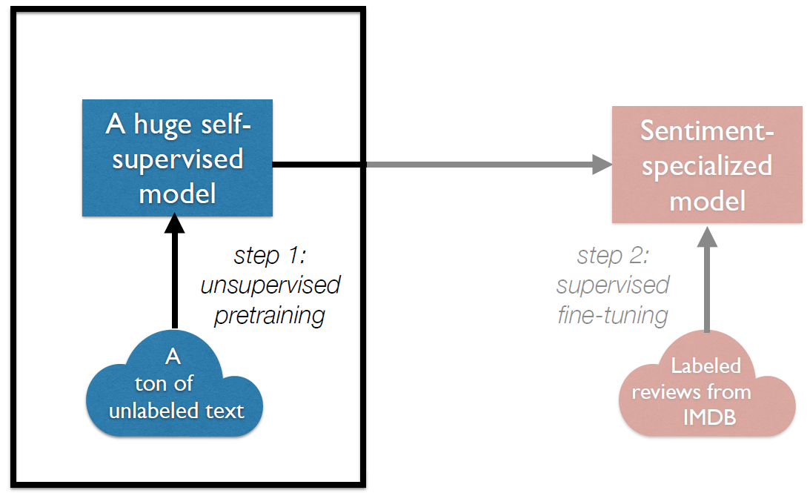
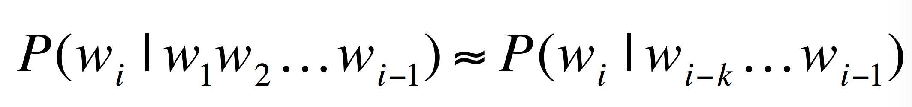
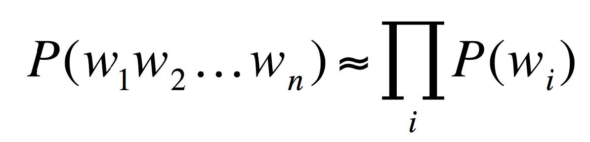
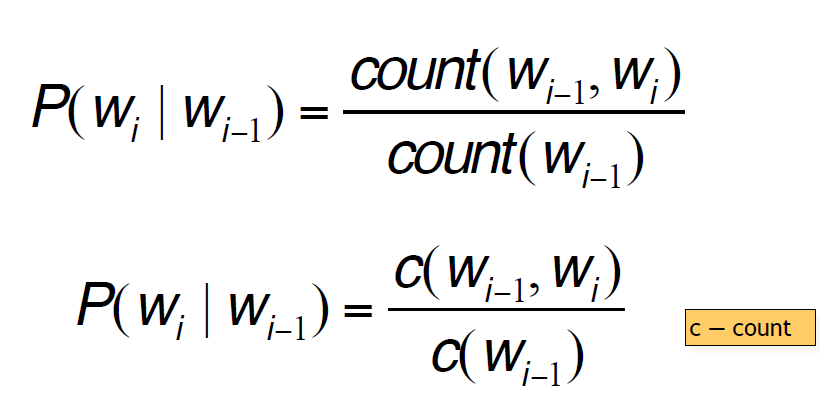
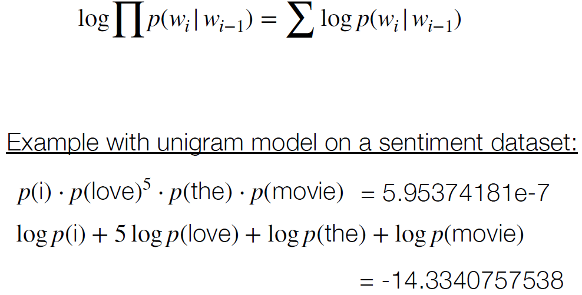
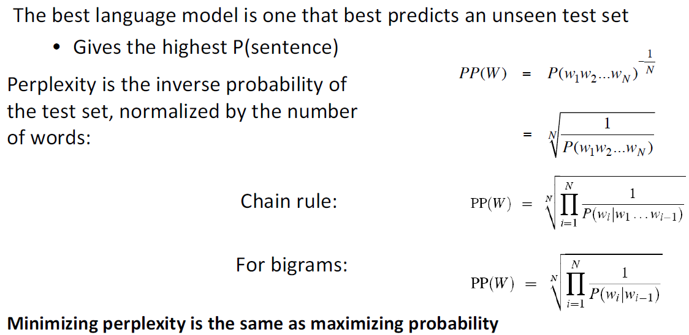

Language Modeling
Let’s say I want to train a model for sentiment analysis. Nowadays, we use transfer learning:

This lecture: language modeling, which forms the core of most self-supervised NLP approaches
Probabilistic Language Modeling
- Goal: compute the probability of a sentence or sequence of words: P(W) = P(w1,w2,w3,w4,w5…wn)
- Related task: probability of an upcoming word: P(w5|w1,w2,w3,w4)
- A model that computes either of these: P(W) or P(wn|w1,w2…wn-1) is called a language model or LM
How to compute P(W)
P(“its water is so transparent”) = P(its) × P(water|its) × P(is|its water) × P(so|its water is) × P(transparent|its water is so)
How to estimate these probabilities
P(the | its water is so transparent that) = Count(its water is so transparent that the) / Count(its water is so transparent that)
Too many possible sentences! We’ll never see enough data for estimating these
Markov Assumption
Simplifying assumption:
P(the | its water is so transparent that) ≈ P(the | that) P(the | its water is so transparent that) ≈ P(the | transparent that)

Simplest case: Unigram model

N-gram models
We can extend to trigrams, 4-grams, 5-grams
In general this is an insufficient model of language, because language has long-distance dependencies:
“The computer which I had just put into the machine room on the fifth floor crashed.”
But we can often get away with N-gram models
Estimating bigram probabilities
The Maximum Likelihood Estimate (MLE): relative frequency based on the empirical counts on a training set

these probabilities get super tiny when we have longer inputs w/ more infrequent words… how can we get around this?
logs to avoid underflow

We can’t allow test sentences into the training set. We will assign it an artificially high probability when we set it in the test* set
Perplexity
